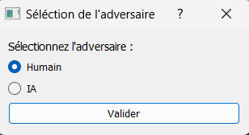
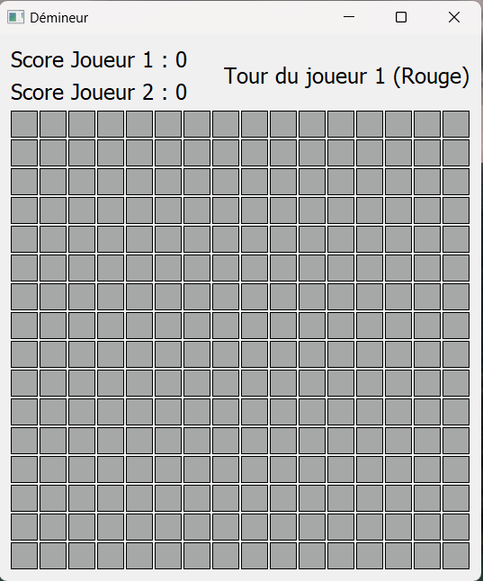
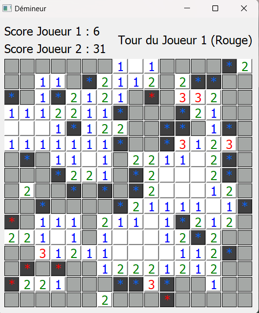
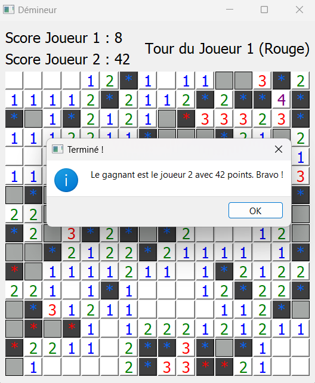

| Home | Voir les personnes | Voir le Jeu | Voir le projet | Lien vers le git |
|---|
L'Interface graphique du démineur à été codé grâce a la bibliothèque PyQt5 qui est la version Python de Qt5 normalement en C++
Au début du jeu, on a la possibilité de choisir entre jouer contre une IA ou une vraie personne :
En haut de la grille du jeu, on voit le score des deux joueurs et le tour du joueur.
Les bombes sont associé au joueur qui l'a trouvé. Les cases blanches vides sont ceux qui ne contiennent aucune mine autour.
Le joueur ayant trouvé le plus de bombe gagne la partie
Pour l'interface graphique, le plus difficile à été d'apprendre à utiliser la bibliothèque PyQt5. J'ai rencontré plusieurs erreurs durant le développement de l'interface, les plus difficiles a résoudre sont :